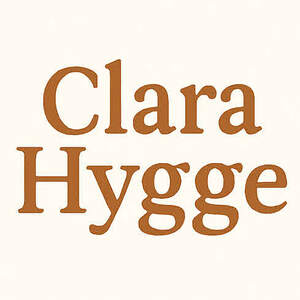

Trade Mark Journal No.2025/024 13 June 2025
UK00004212073 31 May 2025 (14,18,20,25,26)

- Class 14
- Choker necklaces; Necklace charms; Necklaces; Necklaces [jewelry]; Earrings; Pendants [jewelry]; Bracelets [jewelry]; Silver-plated earrings; Bracelet charms; Bracelets [jewellery]; Bangle bracelets; Necklaces [jewellery, jewelry (Am.)]; Bib necklaces; Silver necklaces; Gold-plated necklaces; Gold necklaces; Amber pendants being jewellery; Brooches [jewelry]; Jewelry brooches; Brooches being jewelry; Silver earrings; Gold earrings; Bead bracelets; Jewel pendants; Pearls [jewelry]; Scarf clips being jewelry; Charms [jewelry]; Jewelry charms; Charms for jewelry; Pendants; Gold-plated earrings; Clasps for jewelry; Clip earrings; Silver-plated bracelets; Pearls [jewellery, jewelry (Am.)]; Jewellery chain of precious metal for bracelets; Brooches [jewellery, jewelry (Am.)]; Lockets [jewelry]; Charms [jewellery, jewelry (Am.)]; Jewellery rope chain for anklets; Identification bracelets [jewelry]; Brooches [jewellery]; Jewellery brooches; Jewelry; Hoop earrings; Bracelets; Pearls [jewellery]; Charms [jewellery]; Charms for jewellery; Jewellery charms; Rings [jewelry]; Pendant watches; Rings [jewellery, jewelry (Am.)]; Lockets [jewellery, jewelry (Am.)]; Pierced earrings; Jewelry stickpins; Jewelry (Paste -) [costume jewelry]; Paste jewelry [costume jewelry]; Medallions [jewellery, jewelry (Am.)]; Amberoid pendants being jewellery; Clasps for jewellery; Jewellery chain; Amulets [jewelry]; Chains [jewellery, jewelry (Am.)]; Amulets [jewellery, jewelry (Am.)]; Lockets [jewellery]; Jewellery chain of precious metal for anklets; Wristlets [jewellery]; Diamond jewelry; Hat jewelry; Rings being jewellery; Rings [jewellery]; Ornaments [jewellery, jewelry (Am.)]; Silver bracelets; Wooden bead bracelets; Bangles; Jewellery in the form of beads; Gold plated brooches [jewellery]; Gold plated earrings; Gold bracelets; Agate as jewellery; Silver thread [jewelry]; Cloisonne jewellery; Gold plated bracelets; Cabochons for making jewelry; Wire of precious metal [jewellery, jewelry (Am.)]; Shoe jewelry; Jewelry hatpins; Pins being jewelry; Necklaces [jewellery]; Silver-plated necklaces; Jewellery rope chain for necklaces; Pendants [jewellery]; Jewelry clips for adapting pierced earrings to clip-on earrings; Jewellery chain of precious metal for necklaces; Bracelets [jewellery, jewelry (Am.)]; Jewellery rope chain for bracelets; Paste jewellery [costume jewelry [Am.]]; Paste jewellery [costume jewelry (Am.)]; Silver thread [jewellery, jewelry (Am.)]; Costume jewelry; Jewelry chains; Chains [jewelry]; Identification bracelets of precious metal [jewelry]; Hat jewellery; Trinkets [jewellery, jewelry (Am.)]; Bracelets made of embroidered textile [jewelry]; Drop earrings; Pewter jewellery; Gold thread [jewellery, jewelry (Am.)]; Jade [jewellery]; Pins [jewellery, jewelry (Am.)]; Amulets being jewellery; Amulets [jewellery]; Ivory [jewellery, jewelry (Am.)]; Cloisonné jewellery [jewelry (Am.)]; Ornaments [jewellery]; Closures for necklaces; Beads for making jewelry; Necklaces of precious metal; Jewellery; Earrings of precious metal; Decorative brooches [jewellery]; Bracelets made of embroidered textile [jewellery]; Pendants for watch chains; Costume jewellery; Plastic bracelets in the nature of jewelry; Rhinestones for making jewelry; Jewelry hat pins; Dress ornaments in the nature of jewellery; Trinkets [jewelry]; Beads for making jewellery; Jewellery chains; Chains [jewellery]; Ivory jewelry; Jewellery hat pins; Crucifixes as jewelry.
- Class 18
- Suitcases; Carry-on suitcases; Handles (Suitcase -); Carry-on bags; Suitcases with wheels; Trunks and suitcases; Straps for suitcases; Roller suitcases; Small suitcases; Bags for travel; Knitted bags; Tote bags; Grocery tote bags; Carry-all bags; Bags; Duffle bags; Cross-body bags; Duffel bags; Crossbody bags; Drawstring bags; Canvas bags; Luggage bags; Carrying bags; Leather bags; Diaper bags; Duffel bags for travel; Sling bags; Belt bags and hip bags; Canvas shopping bags; Leather bags and wallets; Bucket bags; Clutch bags; Cloth bags; Leather shopping bags; Bags for umbrellas; Luggage, bags, wallets and other carriers; Messenger bags; Reusable shopping bags; Souvenir bags; Belt bags; Shoulder bags; Kit bags; Nappy bags; Shoe bags; Nose bags [feed bags]; Bags (Nose -) [feed bags]; Umbrella bags; Garment bags; Bags for clothes; Wheeled bags; Knitting bags; Beach bags; Mesh shopping bags; Mesh bags for shopping; Bags [envelopes, pouches] for packaging of leather; Bags [envelopes, pouches] of leather, for packaging; Bags [envelopes, pouches] of leather for packaging; Baby carrying bags; Travel bags; Waterproof bags; Makeup bags; Wrist mounted carryall bags; Camping bags; All-purpose carrying bags; Wash bags for carrying toiletries; Gym bags; Cosmetic bags; Towelling bags; Make-up bags; Hand bags; Bags for carrying pets; Wheeled shopping bags; Book bags; Boot bags; Tool bags of leather, empty; Sling bags for carrying babies; Gladstone bags; Traveling bags; Weekend bags; Toilet bags; Cabin bags; Roll bags; Shoe bags for travel; Roller bags; Bags for carrying animals; Garment bags for travel; Bags (Garment -) for travel; Bum bags; Barrel bags; Hiking bags; Attaché bags; Waist bags.
- Class 20
- Cushions [furniture]; Soft furnishings [cushions]; Coverings (Fitted -) for furniture; Pillows; Curtain hooks; Hooks (Curtain -); Clothes hooks; Hooks for clothing; Hooks for clothes rails; Non-metal clothes hooks; Hat racks [hooks] not of metal; Hooks for towels (Non-metallic -); Curtain hooks made of metal; Coat pegs [wall mounted hooks] non-metallic; Clothes hangers, clothes stands [furniture] and clothes hooks; Clothes hangers and clothes hooks; Hangers for clothes; Hangers (Clothes -); Clothes hangers; Clothes lockers; Clothes racks [furniture]; Clothes rods; Clothes rails; Clothes covers; Clothes organisers; Non-metallic clothes hangers; Clothes stands; Covers for clothing [wardrobe].
- Class 25
- Linen clothing; Clothes; Aprons [clothing]; Blazers; Men's and women's jackets, coats, trousers, vests; Casual jackets; Suede jackets; Waistcoats; Corduroy trousers; Polo sweaters; Jumper dresses; Dresses; Pantsuits; Sweatshirts; Pinafore dresses; Sport shirts; Cashmere scarves; Scarfs; Neck scarves; Silk scarves; Shoulder scarves; Head scarves; Neck scarves [mufflers]; Mufflers [neck scarves]; Mufflers as neck scarves; Neck tube scarves; Neck scarfs [mufflers]; Beanie hats; Turtleneck sweaters; Shawls; Shawls and headscarves; Knit jackets; Knitted clothing; Knit shirts; Knitted gloves; Shawls and stoles; V-neck sweaters; Knitted underwear; Cashmere clothing; Sweaters; Turtleneck pullovers; Mittens; Cowls [clothing]; Turtleneck shirts; Mock turtleneck sweaters; Shawls [from tricot only]; Cardigans; Men's dress socks; Beanies; Knitted tops; Short overcoat for kimono (haori); Bobble hats; Headbands for clothing; Headbands [clothing]; Knit tops; Woollen socks; Capelets; Legwarmers; Polo knit tops; Knitted caps; Knitted baby shoes; Silk clothing; Woollen tights; Fascinator hats; Crew neck sweaters; Fingerless gloves as clothing; Shoulder wraps [clothing]; Shoulder wraps for clothing; Bib tights; Wearable blankets in the nature of blankets with sleeves; Quilted jackets [clothing]; Headbands; Clothing; Swaddling clothes; Baby clothes; Beach clothes; Denims [clothing]; Work clothes; Jackets [clothing]; Shorts [clothing]; Drawers [clothing]; Drawers as clothing; Clothes for sports; Jackets (Stuff -) [clothing]; Stuff jackets [clothing]; Clothes for sport; Kerchiefs [clothing]; Gloves [clothing]; Gloves as clothing; Bottoms [clothing]; Capes (clothing); Trunks being clothing; Babies' pants [clothing]; Jerseys [clothing]; Maternity clothing; Layettes [clothing]; Clothing layettes; Clothing for leisure wear; Woolen clothing; Hoods [clothing]; Oilskins [clothing]; Clothing for babies; Garments for protecting clothing; Ready-to-wear clothing; Bodies [clothing]; Gabardines [clothing]; Tops [clothing]; Belts for clothing; Belts [clothing]; Gussets for underwear [parts of clothing]; Playsuits [clothing]; Collars [clothing]; Veils [clothing]; Pockets for clothing; Knitwear [clothing]; Corsets [clothing, foundation garments]; Paper hats for use as clothing items; Fabric belts [clothing]; Mitts [clothing]; Hats (Paper -) [clothing]; Paper hats [clothing]; Beach clothing; Braces for clothing; Belts (Money -) [clothing]; Money belts [clothing]; Chaps (clothing); Gussets for bathing suits [parts of clothing]; Ready-made clothing; Casual clothing; Embroidered clothing; Sleeveless pullovers; Fleece pullovers; Hooded pullovers; Pullovers; Sleeveless jackets; Sleeveless jerseys; Short-sleeved T-shirts; Hooded sweatshirts; Fleece shorts; Short-sleeved shirts; Long sleeve pullovers; Short-sleeve shirts; Fleece jackets; Mock turtleneck shirts; Jumpers [pullovers]; Sleeved jackets; Long-sleeved shirts; Fleece vests; Turtleneck tops; Blouson jackets; Tennis pullovers; Polar fleece jackets; Button-front aloha shirts; Corduroy shirts; Fleece tops; Sweatpants; Jumpers [sweaters]; Knitwear; Leggings [trousers]; Hooded sweat shirts; Overshirts; Corduroy pants; Windproof jackets; Sweatshorts; Shirt yokes; Yokes (Shirt -); Vest tops; Wind-resistant jackets; Baselayer tops; Denim jackets; Quilted vests; Moisture-wicking sports pants; Open-necked shirts; Reversible jackets; Bib shorts; Pyjamas [from tricot only]; Collared shirts; Moisture-wicking sports shirts; Dress shirts; Hoodies; Long sleeved vests; Wind-resistant vests; Turtlenecks; Windproof clothing; Camouflage shirts; Hooded tops; Capri pants; Denim pants; Camouflage jackets; Handwarmers [clothing]; Sports shirts with short sleeves; Tracksuit tops; Woven shirts; Dress pants; Trousers shorts; Jacket liners; Camouflage pants; Gilets; Ski trousers; Weatherproof pants.
- Class 26
- Pins, other than jewellery [jewelry (Am.)]; Beads, other than for making jewelry; Scarf clips not being jewelry; Beads, other than for making jewellery; Ceramic beads, other than for making jewelry; Charms [not jewellery or for keys, rings or chains]; Beads other than for making jewelry [haberdashery]; Hatpins, other than jewelry; Hat pins, other than jewellery; Hooks (Rug -); Hooks (Embroidering crochet -); Textile ribbons for gift wrapping; Textile bows for gift wrapping; Hairbands; Barrettes; Hair barrettes; Scrunchies; Hair scrunchies; Barrettes [hair-slides]; Brooches for clothing; Ponytail holders and hair ribbons; Claw clips [hair accessories]; Brooches [clothing accessories]; Pins, other than jewellery; Elasticated hair ribbons; Hair elastics; Hair pins; Pins for the hair; Pins, other than jewelry; Snap clips [hair accessories]; Paper bows [hair decorations]; Hair ribbons; Ribbons for the hair; Ornaments (Hair -); Ornaments for the hair; Hair ornaments; Bows for the hair; Hair bows; Oriental hair pins; Hair clips; Hair tassel ornaments for Japanese hair styling (negake); Hair buckles; Paper ribbons [hair decorations]; Waving pins for the hair; Ornamental hair pins for Japanese hair styling (kogai); Hair ornaments in the form of combs; Hair twisters [hair accessories]; Plaits of hair; Hair curling pins; Bridal headpieces in the nature of ornamental hair combs; Braids; Hair ornaments, hair rollers, hair fastening articles, and false hair; Hair pins and grips; Clam clips for hair; Twisters [hair accessories]; Bobby pins; Hair decorations; Tabodome [hair pins for fixing back-hairpieces for use in Japanese hair styling]; Hair ribbons for Japanese hair styling (tegara); Hair curl clips; Hair tassel strings for Japanese hair styling (motoyui); Top-knots [pompoms]; Haberdashery bows; Plaited hair; Hair (Plaited -); Hair curlers; Hair fasteners; Hair ornaments in the nature of hair wraps; Sticks for use in decorating the hair; Hair coloring caps; Sticks for use in styling the hair; Hair tresses; Tresses of hair; Hair (Tresses of -); Decorative articles for the hair; Hairpieces for Japanese hair styling (kamishin); Hairpieces for Japanese hair styling [kamishin]; Ornamental combs for Japanese hair styling (marugushi); Hair ornaments [not of precious metal]; Hair bands; Bands for the hair; Bands (Hair -); Pins; Hair nets; Grips for the hair; Hair grips; Elastic for tying hair.
Natalia Nechistiak